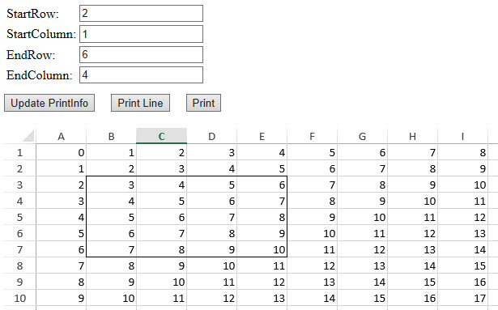

Display Preview Line for Print
In This Topic
Usually, before printing any report data, users tend to preview how the document will look like after the printing job is executed. This is done using the Print Preview dialog that helps to identify, view and fix any potential page layout glitches. But, unfortunately, the Print Preview dialog can only generate a preview of the entire worksheet and doesn't allow users to preview and print specific data.
SpreadJS allows users to display preview lines for printing so that only the desired data is printed as per their custom requirements. This feature is useful especially when you're working with large worksheets but you want to print only specific chunks of data (or cell ranges) on different pages.
Users can use the isPrintLineVisible() method of the Worksheet class to get or set whether to display preview lines in the worksheet.
Example
For instance, let's assume that you're working on a marketing application containing product sales information and other statistical figures from different regions. Now, you want to print the sales data of different regions on different pages. In such a scenario, it becomes important to check and preview whether the data selected for printing will print on the correct page. By displaying preview lines for printing, users can correctly print desired data on specific pages.
An example image displaying preview lines for printing is shown below. When users set the starting row as 2, starting column as 1, end row as 6 and end column as 4; preview lines will be displayed to indicate the printing area as B3:E7.

Using Code
Refer to the following code to display preview lines for printing.
| JavaScript |
Copy Code
|
|
<!DOCTYPE html>
<html>
<head>
<script src="https://code.jquery.com/jquery-2.1.1.min.js" type="text/javascript"></script>
<link href="css/gc.spread.sheets.excel2013white.12.2.0.css" rel="stylesheet" />
<script src="scripts/gc.spread.sheets.all.12.2.0.min.js"></script>
<script src="scripts/gc.spread.sheets.print.12.2.0.min.js"></script>
<script>
$(document).ready(function ()
{
// Initialize spread
var spread = new GC.Spread.Sheets.Workbook(document.getElementById('ss'),
{ sheetCount: 1 });
spread.suspendPaint();
// Fetch the ActiveSheet
var sheet = spread.getActiveSheet();
sheet.setRowCount(600);
sheet.setColumnCount(80);
// Set value
for (var r = 0, rc = sheet.getRowCount() + 150; r < rc; r++) {
for (var c = 0, cc = sheet.getColumnCount() + 20; c < cc; c++) {
sheet.setValue(r, c, r + c);
}
}
// Set print info
var printInfo = sheet.printInfo();
spread.resumePaint();
$("#print").click(function () {
spread.print();
});
$("#printLine").click(function () {
var activeSheet = spread.getActiveSheet();
var isDisplayPrintLine = activeSheet.isPrintLineVisible();
activeSheet.isPrintLineVisible(!isDisplayPrintLine);
});
$("#updatePrintInfo").click(function () {
var activeSheet = spread.getActiveSheet();
var printInfo = activeSheet.printInfo();
var startRow = parseInt(document.getElementById("startRow").value);
var endRow = parseInt(document.getElementById("endRow").value);
var startColumn = parseInt(document.getElementById("startColumn").value);
var endColumn = parseInt(document.getElementById("endColumn").value);
printInfo.rowStart(startRow);
printInfo.rowEnd(endRow)
printInfo.columnStart(startColumn);
printInfo.columnEnd(endColumn);
});
});
</script>
</head>
<body>
<table>
<tr>
<td>StartRow: </td>
<td> <input id="startRow" type="text" value="0" /> </td>
</tr>
<tr>
<td>StartColumn: </td>
<td><input id="startColumn" type="text" value="0" /> </td>
</tr>
<tr>
<td>EndRow: </td>
<td> <input id="endRow" type="text" value="12" /> </td>
</tr>
<tr>
<td>EndColumn: </td>
<td> <input id="endColumn" type="text" value="12" /> </td>
</tr>
</table>
<div style=" margin-top:10px">
<input type="button" id="updatePrintInfo" value="Update PrintInfo">
<input type="button" style=" margin-left:16px" id="printLine" value="Print Line">
<input type="button" style=" margin-left:16px" id="print" value="Print">
</div>
<div id="ss" style="height:650px;width:1000px; margin-top:20px"></div>
</body>
</html>
|